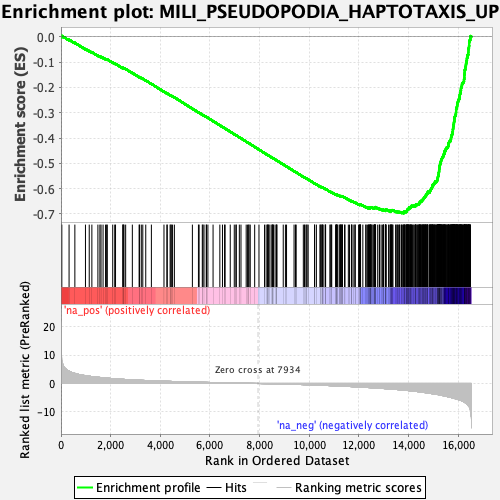
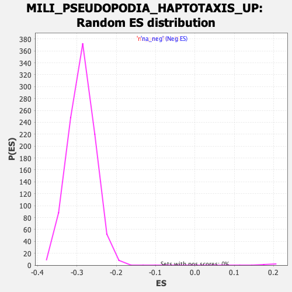

| | | Dataset | DE_genes2 |
| Phenotype | NoPhenotypeAvailable |
| Upregulated in class | na_neg |
| GeneSet | MILI_PSEUDOPODIA_HAPTOTAXIS_UP |
| Enrichment Score (ES) | -0.6966154 |
| Normalized Enrichment Score (NES) | -2.4183717 |
| Nominal p-value | 0.0 |
| FDR q-value | 0.0 |
| FWER p-Value | 0.0 |
Table: GSEA Results Summary

Fig 1: Enrichment plot: MILI_PSEUDOPODIA_HAPTOTAXIS_UP
Profile of the Running ES Score & Positions of GeneSet Members on the Rank Ordered List
| PROBE | GENE SYMBOL | GENE_TITLE | RANK IN GENE LIST | RANK METRIC SCORE | RUNNING ES | CORE ENRICHMENT | | 1 | ATP6V1D | | | 33 | 8.106 | 0.0034 | No |
| 2 | PPP1R7 | | | 325 | 4.316 | -0.0118 | No |
| 3 | CYB5R3 | | | 558 | 3.546 | -0.0238 | No |
| 4 | IVNS1ABP | | | 985 | 2.753 | -0.0485 | No |
| 5 | TP53INP2 | | | 1137 | 2.557 | -0.0562 | No |
| 6 | KIF1C | | | 1243 | 2.425 | -0.0611 | No |
| 7 | TRIP4 | | | 1486 | 2.187 | -0.0747 | No |
| 8 | DIXDC1 | | | 1566 | 2.115 | -0.0781 | No |
| 9 | DTNA | | | 1612 | 2.080 | -0.0795 | No |
| 10 | STARD10 | | | 1694 | 1.996 | -0.0832 | No |
| 11 | RAB11A | | | 1794 | 1.923 | -0.0881 | No |
| 12 | MAP2K7 | | | 1838 | 1.889 | -0.0895 | No |
| 13 | VTI1B | | | 1864 | 1.865 | -0.0898 | No |
| 14 | KCTD10 | | | 2083 | 1.693 | -0.1022 | No |
| 15 | DCAF5 | | | 2164 | 1.641 | -0.1061 | No |
| 16 | FAM229B | | | 2196 | 1.623 | -0.1069 | No |
| 17 | GAB2 | | | 2492 | 1.447 | -0.1243 | No |
| 18 | MKRN1 | | | 2501 | 1.441 | -0.1238 | No |
| 19 | NUDT2 | | | 2505 | 1.439 | -0.1231 | No |
| 20 | UBE2D3 | | | 2537 | 1.422 | -0.1240 | No |
| 21 | XAF1 | | | 2604 | 1.386 | -0.1272 | No |
| 22 | LGALSL | | | 2873 | 1.256 | -0.1430 | No |
| 23 | IFIT2 | | | 3146 | 1.135 | -0.1592 | No |
| 24 | FBXO32 | | | 3164 | 1.127 | -0.1595 | No |
| 25 | SNAP23 | | | 3234 | 1.100 | -0.1631 | No |
| 26 | RPS20 | | | 3294 | 1.077 | -0.1660 | No |
| 27 | PTP4A2 | | | 3413 | 1.033 | -0.1726 | No |
| 28 | SMCO4 | | | 3640 | 0.954 | -0.1861 | No |
| 29 | CAB39L | | | 4147 | 0.794 | -0.2171 | No |
| 30 | HES5 | | | 4264 | 0.760 | -0.2238 | No |
| 31 | SAMD9L | | | 4280 | 0.755 | -0.2242 | No |
| 32 | SERPINB9 | | | 4394 | 0.722 | -0.2307 | No |
| 33 | DLG3 | | | 4428 | 0.713 | -0.2323 | No |
| 34 | TMLHE | | | 4439 | 0.711 | -0.2325 | No |
| 35 | PCYT1B | | | 4493 | 0.695 | -0.2353 | No |
| 36 | NET1 | | | 4566 | 0.672 | -0.2393 | No |
| 37 | CTTNBP2NL | | | 5291 | 0.494 | -0.2841 | No |
| 38 | DNAJC15 | | | 5535 | 0.442 | -0.2989 | No |
| 39 | CYP2C18 | | | 5562 | 0.436 | -0.3002 | No |
| 40 | MID2 | | | 5690 | 0.407 | -0.3079 | No |
| 41 | UGP2 | | | 5714 | 0.402 | -0.3090 | No |
| 42 | SAMD4A | | | 5759 | 0.393 | -0.3115 | No |
| 43 | MAPKBP1 | | | 5849 | 0.375 | -0.3168 | No |
| 44 | PKP4 | | | 5859 | 0.373 | -0.3171 | No |
| 45 | MRPL57 | | | 5916 | 0.362 | -0.3203 | No |
| 46 | IGF2BP2 | | | 6124 | 0.320 | -0.3330 | No |
| 47 | PALLD | | | 6397 | 0.264 | -0.3498 | No |
| 48 | PARP4 | | | 6503 | 0.244 | -0.3561 | No |
| 49 | FNBP1L | | | 6587 | 0.225 | -0.3612 | No |
| 50 | ZMAT2 | | | 6609 | 0.221 | -0.3623 | No |
| 51 | CDKAL1 | | | 6816 | 0.182 | -0.3750 | No |
| 52 | RAB13 | | | 6978 | 0.159 | -0.3850 | No |
| 53 | BTF3L4 | | | 7043 | 0.148 | -0.3888 | No |
| 54 | DYNC1LI2 | | | 7060 | 0.143 | -0.3897 | No |
| 55 | SH3BGRL | | | 7182 | 0.120 | -0.3972 | No |
| 56 | C11orf74 | | | 7248 | 0.107 | -0.4012 | No |
| 57 | SH3GLB1 | | | 7458 | 0.073 | -0.4141 | No |
| 58 | RPL31 | | | 7514 | 0.062 | -0.4175 | No |
| 59 | RALA | | | 7561 | 0.055 | -0.4203 | No |
| 60 | DCAF6 | | | 7569 | 0.053 | -0.4207 | No |
| 61 | DCLK1 | | | 7621 | 0.044 | -0.4239 | No |
| 62 | ARMCX3 | | | 7800 | 0.018 | -0.4350 | No |
| 63 | SMAP1 | | | 7973 | -0.007 | -0.4457 | No |
| 64 | CENPB | | | 8197 | -0.041 | -0.4595 | No |
| 65 | INPP1 | | | 8262 | -0.050 | -0.4635 | No |
| 66 | CELF2 | | | 8323 | -0.061 | -0.4672 | No |
| 67 | IQSEC2 | | | 8331 | -0.062 | -0.4676 | No |
| 68 | TXNL1 | | | 8336 | -0.063 | -0.4678 | No |
| 69 | USP46 | | | 8366 | -0.068 | -0.4695 | No |
| 70 | MYO1H | | | 8414 | -0.078 | -0.4724 | No |
| 71 | BHLHB9 | | | 8493 | -0.091 | -0.4772 | No |
| 72 | NCOA2 | | | 8504 | -0.094 | -0.4778 | No |
| 73 | RIOK3 | | | 8526 | -0.098 | -0.4790 | No |
| 74 | C1orf216 | | | 8532 | -0.098 | -0.4793 | No |
| 75 | KANK2 | | | 8555 | -0.103 | -0.4806 | No |
| 76 | CCND2 | | | 8621 | -0.113 | -0.4845 | No |
| 77 | PPFIA1 | | | 8675 | -0.124 | -0.4877 | No |
| 78 | MPP7 | | | 8689 | -0.128 | -0.4885 | No |
| 79 | HMGCS1 | | | 8693 | -0.128 | -0.4886 | No |
| 80 | YTHDF2 | | | 8950 | -0.182 | -0.5044 | No |
| 81 | MTAP | | | 9038 | -0.201 | -0.5097 | No |
| 82 | GOLPH3 | | | 9083 | -0.211 | -0.5123 | No |
| 83 | IWS1 | | | 9386 | -0.286 | -0.5309 | No |
| 84 | CSTF2 | | | 9445 | -0.302 | -0.5343 | No |
| 85 | UFSP2 | | | 9471 | -0.306 | -0.5356 | No |
| 86 | GDI2 | | | 9759 | -0.388 | -0.5533 | No |
| 87 | AGFG1 | | | 9805 | -0.402 | -0.5558 | No |
| 88 | TBC1D8B | | | 9830 | -0.408 | -0.5570 | No |
| 89 | SYCP3 | | | 9898 | -0.427 | -0.5609 | No |
| 90 | SKP1 | | | 9904 | -0.430 | -0.5609 | No |
| 91 | PJA2 | | | 9954 | -0.446 | -0.5637 | No |
| 92 | VPS35 | | | 10211 | -0.529 | -0.5792 | No |
| 93 | PDK1 | | | 10214 | -0.529 | -0.5790 | No |
| 94 | UBA3 | | | 10285 | -0.550 | -0.5830 | No |
| 95 | SBF2 | | | 10433 | -0.598 | -0.5918 | No |
| 96 | CISD1 | | | 10440 | -0.600 | -0.5917 | No |
| 97 | TIGD2 | | | 10476 | -0.611 | -0.5935 | No |
| 98 | RAB5A | | | 10517 | -0.632 | -0.5955 | No |
| 99 | VPS4B | | | 10518 | -0.632 | -0.5951 | No |
| 100 | CISD2 | | | 10526 | -0.634 | -0.5951 | No |
| 101 | MEF2A | | | 10558 | -0.648 | -0.5966 | No |
| 102 | IRAK1BP1 | | | 10642 | -0.675 | -0.6013 | No |
| 103 | EIF4G2 | | | 10645 | -0.677 | -0.6010 | No |
| 104 | TANK | | | 10657 | -0.680 | -0.6012 | No |
| 105 | LZTFL1 | | | 10828 | -0.738 | -0.6113 | No |
| 106 | TAF13 | | | 10864 | -0.747 | -0.6130 | No |
| 107 | TXNDC9 | | | 10883 | -0.759 | -0.6136 | No |
| 108 | SCP2 | | | 10903 | -0.767 | -0.6143 | No |
| 109 | ARL6 | | | 11060 | -0.827 | -0.6234 | No |
| 110 | TUBGCP4 | | | 11074 | -0.833 | -0.6237 | No |
| 111 | UBE2D2 | | | 11097 | -0.840 | -0.6245 | No |
| 112 | CXorf56 | | | 11101 | -0.841 | -0.6241 | No |
| 113 | AP3M1 | | | 11102 | -0.842 | -0.6235 | No |
| 114 | RNF115 | | | 11117 | -0.846 | -0.6238 | No |
| 115 | RGS20 | | | 11126 | -0.851 | -0.6237 | No |
| 116 | RAB8B | | | 11201 | -0.881 | -0.6277 | No |
| 117 | TCTEX1D2 | | | 11232 | -0.894 | -0.6290 | No |
| 118 | SARNP | | | 11249 | -0.901 | -0.6294 | No |
| 119 | CFDP1 | | | 11263 | -0.909 | -0.6296 | No |
| 120 | SNX16 | | | 11280 | -0.918 | -0.6300 | No |
| 121 | SS18L2 | | | 11286 | -0.921 | -0.6296 | No |
| 122 | TSTD3 | | | 11317 | -0.933 | -0.6309 | No |
| 123 | RYBP | | | 11330 | -0.940 | -0.6310 | No |
| 124 | CHPT1 | | | 11333 | -0.942 | -0.6305 | No |
| 125 | WDR26 | | | 11419 | -0.977 | -0.6351 | No |
| 126 | ST13 | | | 11437 | -0.983 | -0.6355 | No |
| 127 | DNAJA1 | | | 11572 | -1.035 | -0.6432 | No |
| 128 | KIAA1841 | | | 11620 | -1.054 | -0.6454 | No |
| 129 | COA5 | | | 11697 | -1.085 | -0.6494 | No |
| 130 | CRBN | | | 11711 | -1.091 | -0.6494 | No |
| 131 | YTHDC1 | | | 11713 | -1.091 | -0.6488 | No |
| 132 | PAIP1 | | | 11796 | -1.132 | -0.6531 | No |
| 133 | VAMP4 | | | 11842 | -1.148 | -0.6551 | No |
| 134 | GTF3C6 | | | 11848 | -1.152 | -0.6547 | No |
| 135 | ZNF277 | | | 11985 | -1.214 | -0.6623 | No |
| 136 | RAP1A | | | 12021 | -1.232 | -0.6637 | No |
| 137 | GSPT1 | | | 12026 | -1.234 | -0.6631 | No |
| 138 | SYNJ2BP | | | 12044 | -1.242 | -0.6633 | No |
| 139 | WWP1 | | | 12045 | -1.243 | -0.6624 | No |
| 140 | STARD4 | | | 12059 | -1.250 | -0.6624 | No |
| 141 | EIF1AY | | | 12064 | -1.251 | -0.6618 | No |
| 142 | HNRNPK | | | 12156 | -1.310 | -0.6666 | No |
| 143 | CAMK2D | | | 12272 | -1.361 | -0.6728 | No |
| 144 | MRPL47 | | | 12288 | -1.368 | -0.6728 | No |
| 145 | ZEB1 | | | 12339 | -1.396 | -0.6750 | No |
| 146 | RSPRY1 | | | 12381 | -1.419 | -0.6766 | No |
| 147 | HIBCH | | | 12388 | -1.420 | -0.6760 | No |
| 148 | C3orf38 | | | 12405 | -1.427 | -0.6760 | No |
| 149 | PNO1 | | | 12426 | -1.437 | -0.6763 | No |
| 150 | MRRF | | | 12441 | -1.445 | -0.6762 | No |
| 151 | ABCB7 | | | 12447 | -1.449 | -0.6755 | No |
| 152 | SSBP1 | | | 12461 | -1.455 | -0.6754 | No |
| 153 | RBBP8 | | | 12469 | -1.463 | -0.6748 | No |
| 154 | FYTTD1 | | | 12472 | -1.463 | -0.6739 | No |
| 155 | PSMD6 | | | 12483 | -1.469 | -0.6736 | No |
| 156 | ZRSR2 | | | 12519 | -1.485 | -0.6747 | No |
| 157 | HDAC2 | | | 12527 | -1.490 | -0.6742 | No |
| 158 | FAM13B | | | 12592 | -1.529 | -0.6771 | No |
| 159 | HMGN3 | | | 12620 | -1.543 | -0.6778 | No |
| 160 | SCRN3 | | | 12621 | -1.544 | -0.6767 | No |
| 161 | PTPN2 | | | 12627 | -1.546 | -0.6760 | No |
| 162 | SLIRP | | | 12630 | -1.549 | -0.6751 | No |
| 163 | MLLT3 | | | 12647 | -1.560 | -0.6750 | No |
| 164 | OXR1 | | | 12658 | -1.569 | -0.6746 | No |
| 165 | VPS41 | | | 12660 | -1.571 | -0.6736 | No |
| 166 | UTP14A | | | 12669 | -1.576 | -0.6730 | No |
| 167 | FRG1 | | | 12754 | -1.618 | -0.6771 | No |
| 168 | SHOX2 | | | 12818 | -1.664 | -0.6799 | No |
| 169 | MTMR6 | | | 12827 | -1.670 | -0.6793 | No |
| 170 | YWHAB | | | 12890 | -1.707 | -0.6820 | No |
| 171 | CNOT2 | | | 12943 | -1.739 | -0.6841 | No |
| 172 | TLK2 | | | 12985 | -1.756 | -0.6854 | No |
| 173 | CLOCK | | | 12988 | -1.761 | -0.6844 | No |
| 174 | ZDHHC2 | | | 12991 | -1.764 | -0.6833 | No |
| 175 | CTBP2 | | | 13062 | -1.807 | -0.6864 | No |
| 176 | CENPP | | | 13066 | -1.809 | -0.6854 | No |
| 177 | KIAA1143 | | | 13069 | -1.810 | -0.6843 | No |
| 178 | SETD7 | | | 13077 | -1.814 | -0.6835 | No |
| 179 | TTC1 | | | 13084 | -1.819 | -0.6826 | No |
| 180 | MFF | | | 13092 | -1.822 | -0.6818 | No |
| 181 | SLC4A1AP | | | 13193 | -1.887 | -0.6868 | No |
| 182 | IDI1 | | | 13215 | -1.899 | -0.6868 | No |
| 183 | PIP4K2A | | | 13272 | -1.937 | -0.6890 | No |
| 184 | MRPS14 | | | 13275 | -1.939 | -0.6878 | No |
| 185 | DYNLT3 | | | 13291 | -1.949 | -0.6874 | No |
| 186 | CCNC | | | 13299 | -1.953 | -0.6865 | No |
| 187 | ZNRF2 | | | 13306 | -1.959 | -0.6856 | No |
| 188 | CCDC90B | | | 13331 | -1.976 | -0.6857 | No |
| 189 | SNX6 | | | 13340 | -1.980 | -0.6849 | No |
| 190 | NAMPT | | | 13369 | -2.009 | -0.6853 | No |
| 191 | BBIP1 | | | 13476 | -2.084 | -0.6905 | No |
| 192 | CDV3 | | | 13495 | -2.097 | -0.6902 | No |
| 193 | RBM7 | | | 13537 | -2.123 | -0.6913 | No |
| 194 | MYEF2 | | | 13560 | -2.139 | -0.6912 | No |
| 195 | STRAP | | | 13601 | -2.162 | -0.6922 | No |
| 196 | SREK1IP1 | | | 13635 | -2.191 | -0.6928 | No |
| 197 | ATF2 | | | 13648 | -2.197 | -0.6921 | No |
| 198 | OLA1 | | | 13711 | -2.252 | -0.6944 | No |
| 199 | WWTR1 | | | 13721 | -2.257 | -0.6934 | No |
| 200 | FAM133B | | | 13761 | -2.293 | -0.6943 | No |
| 201 | EXOSC9 | | | 13799 | -2.331 | -0.6950 | Yes |
| 202 | TRIM44 | | | 13814 | -2.340 | -0.6943 | Yes |
| 203 | CYB5R4 | | | 13819 | -2.346 | -0.6930 | Yes |
| 204 | MRPS22 | | | 13820 | -2.347 | -0.6914 | Yes |
| 205 | PDCD10 | | | 13828 | -2.354 | -0.6902 | Yes |
| 206 | MRPL13 | | | 13854 | -2.373 | -0.6902 | Yes |
| 207 | GMPS | | | 13895 | -2.413 | -0.6910 | Yes |
| 208 | ZNF24 | | | 13896 | -2.413 | -0.6894 | Yes |
| 209 | MRPS18C | | | 13918 | -2.432 | -0.6891 | Yes |
| 210 | PDCD5 | | | 13925 | -2.436 | -0.6878 | Yes |
| 211 | INTS8 | | | 13932 | -2.440 | -0.6865 | Yes |
| 212 | CNOT7 | | | 13941 | -2.448 | -0.6854 | Yes |
| 213 | PSMC6 | | | 13947 | -2.453 | -0.6840 | Yes |
| 214 | DDR2 | | | 13954 | -2.459 | -0.6827 | Yes |
| 215 | RP2 | | | 13959 | -2.466 | -0.6813 | Yes |
| 216 | CHMP2B | | | 13987 | -2.487 | -0.6813 | Yes |
| 217 | FKBP3 | | | 13989 | -2.488 | -0.6797 | Yes |
| 218 | KPNA3 | | | 14006 | -2.498 | -0.6790 | Yes |
| 219 | TCF12 | | | 14013 | -2.503 | -0.6777 | Yes |
| 220 | CRIPT | | | 14015 | -2.506 | -0.6760 | Yes |
| 221 | STRN | | | 14019 | -2.508 | -0.6745 | Yes |
| 222 | MTHFD2L | | | 14052 | -2.552 | -0.6748 | Yes |
| 223 | MAPK8 | | | 14079 | -2.579 | -0.6747 | Yes |
| 224 | MFAP1 | | | 14087 | -2.586 | -0.6733 | Yes |
| 225 | MBIP | | | 14088 | -2.586 | -0.6716 | Yes |
| 226 | ASNSD1 | | | 14091 | -2.589 | -0.6700 | Yes |
| 227 | SMIM13 | | | 14104 | -2.600 | -0.6690 | Yes |
| 228 | RASA1 | | | 14117 | -2.611 | -0.6679 | Yes |
| 229 | RWDD1 | | | 14159 | -2.651 | -0.6687 | Yes |
| 230 | SRP54 | | | 14178 | -2.670 | -0.6680 | Yes |
| 231 | PPP2R3A | | | 14211 | -2.700 | -0.6682 | Yes |
| 232 | TSR1 | | | 14247 | -2.740 | -0.6685 | Yes |
| 233 | CAMSAP2 | | | 14274 | -2.758 | -0.6682 | Yes |
| 234 | ERI1 | | | 14282 | -2.766 | -0.6668 | Yes |
| 235 | ARPP19 | | | 14285 | -2.770 | -0.6651 | Yes |
| 236 | RBM34 | | | 14287 | -2.774 | -0.6632 | Yes |
| 237 | SLU7 | | | 14295 | -2.779 | -0.6618 | Yes |
| 238 | EIF2S2 | | | 14335 | -2.815 | -0.6623 | Yes |
| 239 | TIMM8A | | | 14364 | -2.846 | -0.6621 | Yes |
| 240 | TAX1BP1 | | | 14383 | -2.867 | -0.6613 | Yes |
| 241 | YME1L1 | | | 14409 | -2.884 | -0.6609 | Yes |
| 242 | GPBP1 | | | 14415 | -2.894 | -0.6593 | Yes |
| 243 | PSMC3IP | | | 14430 | -2.915 | -0.6582 | Yes |
| 244 | GNL2 | | | 14436 | -2.924 | -0.6565 | Yes |
| 245 | ACBD5 | | | 14441 | -2.926 | -0.6548 | Yes |
| 246 | SUMO1 | | | 14445 | -2.929 | -0.6530 | Yes |
| 247 | PBRM1 | | | 14475 | -2.959 | -0.6528 | Yes |
| 248 | PLEKHA8 | | | 14477 | -2.960 | -0.6508 | Yes |
| 249 | CAPZA1 | | | 14484 | -2.972 | -0.6492 | Yes |
| 250 | GTPBP4 | | | 14505 | -2.989 | -0.6484 | Yes |
| 251 | MIB1 | | | 14530 | -3.025 | -0.6479 | Yes |
| 252 | CENPU | | | 14542 | -3.039 | -0.6465 | Yes |
| 253 | PAFAH1B1 | | | 14547 | -3.042 | -0.6447 | Yes |
| 254 | NXT2 | | | 14565 | -3.061 | -0.6437 | Yes |
| 255 | VAMP7 | | | 14577 | -3.081 | -0.6423 | Yes |
| 256 | PFN2 | | | 14586 | -3.093 | -0.6407 | Yes |
| 257 | NFIA | | | 14602 | -3.112 | -0.6395 | Yes |
| 258 | TBC1D12 | | | 14612 | -3.126 | -0.6379 | Yes |
| 259 | DMXL1 | | | 14617 | -3.132 | -0.6361 | Yes |
| 260 | SRSF3 | | | 14629 | -3.159 | -0.6346 | Yes |
| 261 | AP4S1 | | | 14643 | -3.177 | -0.6333 | Yes |
| 262 | CUL4B | | | 14656 | -3.193 | -0.6319 | Yes |
| 263 | THOC7 | | | 14672 | -3.211 | -0.6306 | Yes |
| 264 | CRYZL1 | | | 14677 | -3.216 | -0.6287 | Yes |
| 265 | TRA2B | | | 14687 | -3.230 | -0.6271 | Yes |
| 266 | TMEM263 | | | 14694 | -3.237 | -0.6253 | Yes |
| 267 | KRAS | | | 14706 | -3.249 | -0.6237 | Yes |
| 268 | CFL2 | | | 14731 | -3.278 | -0.6230 | Yes |
| 269 | PPP1CB | | | 14739 | -3.295 | -0.6212 | Yes |
| 270 | PTP4A1 | | | 14741 | -3.296 | -0.6191 | Yes |
| 271 | ESCO1 | | | 14761 | -3.316 | -0.6180 | Yes |
| 272 | PDSS1 | | | 14763 | -3.317 | -0.6158 | Yes |
| 273 | BTBD1 | | | 14774 | -3.329 | -0.6142 | Yes |
| 274 | SOS1 | | | 14775 | -3.332 | -0.6119 | Yes |
| 275 | NAP1L1 | | | 14844 | -3.416 | -0.6138 | Yes |
| 276 | VPS13A | | | 14845 | -3.416 | -0.6115 | Yes |
| 277 | TPD52 | | | 14851 | -3.426 | -0.6095 | Yes |
| 278 | STRBP | | | 14867 | -3.445 | -0.6081 | Yes |
| 279 | EMC2 | | | 14868 | -3.447 | -0.6058 | Yes |
| 280 | CACYBP | | | 14884 | -3.479 | -0.6044 | Yes |
| 281 | TRMT11 | | | 14895 | -3.501 | -0.6026 | Yes |
| 282 | YES1 | | | 14904 | -3.508 | -0.6008 | Yes |
| 283 | TNKS2 | | | 14910 | -3.523 | -0.5987 | Yes |
| 284 | PHLDB2 | | | 14927 | -3.544 | -0.5973 | Yes |
| 285 | VBP1 | | | 14942 | -3.567 | -0.5957 | Yes |
| 286 | YAF2 | | | 14947 | -3.570 | -0.5936 | Yes |
| 287 | FASTKD2 | | | 14951 | -3.574 | -0.5913 | Yes |
| 288 | RBM41 | | | 14956 | -3.579 | -0.5892 | Yes |
| 289 | HTATSF1 | | | 14958 | -3.584 | -0.5868 | Yes |
| 290 | ORC3 | | | 14965 | -3.594 | -0.5847 | Yes |
| 291 | FBXW2 | | | 14999 | -3.651 | -0.5843 | Yes |
| 292 | CCNH | | | 15015 | -3.664 | -0.5828 | Yes |
| 293 | NR3C1 | | | 15016 | -3.666 | -0.5803 | Yes |
| 294 | GPATCH4 | | | 15025 | -3.685 | -0.5783 | Yes |
| 295 | MBNL2 | | | 15039 | -3.698 | -0.5766 | Yes |
| 296 | BZW1 | | | 15067 | -3.745 | -0.5757 | Yes |
| 297 | SNHG6 | | | 15071 | -3.754 | -0.5734 | Yes |
| 298 | DOCK11 | | | 15072 | -3.754 | -0.5709 | Yes |
| 299 | UBE2V2 | | | 15125 | -3.815 | -0.5715 | Yes |
| 300 | HERC4 | | | 15133 | -3.824 | -0.5694 | Yes |
| 301 | PPHLN1 | | | 15147 | -3.840 | -0.5676 | Yes |
| 302 | MYO5A | | | 15158 | -3.859 | -0.5656 | Yes |
| 303 | RANBP6 | | | 15159 | -3.862 | -0.5630 | Yes |
| 304 | C1D | | | 15164 | -3.868 | -0.5606 | Yes |
| 305 | ERGIC2 | | | 15175 | -3.886 | -0.5586 | Yes |
| 306 | CCNG1 | | | 15176 | -3.888 | -0.5560 | Yes |
| 307 | SF3B1 | | | 15180 | -3.893 | -0.5535 | Yes |
| 308 | SRSF1 | | | 15186 | -3.901 | -0.5512 | Yes |
| 309 | THUMPD3 | | | 15197 | -3.914 | -0.5491 | Yes |
| 310 | MAP1B | | | 15204 | -3.921 | -0.5469 | Yes |
| 311 | NAE1 | | | 15207 | -3.925 | -0.5443 | Yes |
| 312 | NIPBL | | | 15209 | -3.928 | -0.5417 | Yes |
| 313 | POLA1 | | | 15213 | -3.936 | -0.5393 | Yes |
| 314 | TOPORS | | | 15214 | -3.936 | -0.5366 | Yes |
| 315 | RNF6 | | | 15218 | -3.942 | -0.5341 | Yes |
| 316 | RAP2C | | | 15227 | -3.960 | -0.5319 | Yes |
| 317 | PPP3CA | | | 15228 | -3.961 | -0.5292 | Yes |
| 318 | CCDC34 | | | 15229 | -3.961 | -0.5266 | Yes |
| 319 | EIF3E | | | 15233 | -3.975 | -0.5241 | Yes |
| 320 | ARMC1 | | | 15235 | -3.976 | -0.5214 | Yes |
| 321 | ZFR | | | 15239 | -3.983 | -0.5189 | Yes |
| 322 | DNM1L | | | 15240 | -3.985 | -0.5162 | Yes |
| 323 | EIF2A | | | 15246 | -3.995 | -0.5138 | Yes |
| 324 | ITGB3BP | | | 15248 | -4.001 | -0.5112 | Yes |
| 325 | SNX5 | | | 15253 | -4.019 | -0.5087 | Yes |
| 326 | BEND6 | | | 15259 | -4.037 | -0.5063 | Yes |
| 327 | WDR75 | | | 15268 | -4.057 | -0.5040 | Yes |
| 328 | FXR1 | | | 15273 | -4.071 | -0.5015 | Yes |
| 329 | SACM1L | | | 15278 | -4.075 | -0.4990 | Yes |
| 330 | SUCLA2 | | | 15282 | -4.085 | -0.4964 | Yes |
| 331 | ARHGAP5 | | | 15292 | -4.102 | -0.4942 | Yes |
| 332 | SPRED1 | | | 15304 | -4.118 | -0.4921 | Yes |
| 333 | SRSF11 | | | 15306 | -4.125 | -0.4894 | Yes |
| 334 | NIFK | | | 15308 | -4.126 | -0.4867 | Yes |
| 335 | WBP4 | | | 15327 | -4.163 | -0.4850 | Yes |
| 336 | MSANTD4 | | | 15332 | -4.171 | -0.4824 | Yes |
| 337 | PCNP | | | 15340 | -4.181 | -0.4800 | Yes |
| 338 | C9orf85 | | | 15356 | -4.216 | -0.4781 | Yes |
| 339 | DCUN1D1 | | | 15358 | -4.218 | -0.4753 | Yes |
| 340 | ARL5A | | | 15378 | -4.254 | -0.4736 | Yes |
| 341 | NPM1 | | | 15396 | -4.274 | -0.4718 | Yes |
| 342 | CD2AP | | | 15398 | -4.286 | -0.4689 | Yes |
| 343 | FNDC3A | | | 15410 | -4.320 | -0.4667 | Yes |
| 344 | LSM14A | | | 15411 | -4.323 | -0.4638 | Yes |
| 345 | CUL3 | | | 15431 | -4.357 | -0.4620 | Yes |
| 346 | ACTR6 | | | 15443 | -4.376 | -0.4597 | Yes |
| 347 | ATR | | | 15446 | -4.382 | -0.4569 | Yes |
| 348 | GKAP1 | | | 15449 | -4.388 | -0.4540 | Yes |
| 349 | DKC1 | | | 15450 | -4.389 | -0.4510 | Yes |
| 350 | TRAPPC8 | | | 15475 | -4.438 | -0.4495 | Yes |
| 351 | RPS6KA3 | | | 15496 | -4.469 | -0.4478 | Yes |
| 352 | EIF3J | | | 15497 | -4.474 | -0.4447 | Yes |
| 353 | TCEA1 | | | 15502 | -4.486 | -0.4419 | Yes |
| 354 | CEBPZOS | | | 15511 | -4.505 | -0.4394 | Yes |
| 355 | CAPZA2 | | | 15538 | -4.569 | -0.4379 | Yes |
| 356 | CDC5L | | | 15563 | -4.617 | -0.4363 | Yes |
| 357 | ZBTB38 | | | 15580 | -4.658 | -0.4341 | Yes |
| 358 | DYNLL2 | | | 15593 | -4.683 | -0.4317 | Yes |
| 359 | ATRX | | | 15599 | -4.719 | -0.4288 | Yes |
| 360 | RABEP1 | | | 15600 | -4.722 | -0.4256 | Yes |
| 361 | COPS2 | | | 15606 | -4.736 | -0.4227 | Yes |
| 362 | CUL2 | | | 15611 | -4.742 | -0.4198 | Yes |
| 363 | NUP54 | | | 15620 | -4.761 | -0.4170 | Yes |
| 364 | DDX10 | | | 15639 | -4.791 | -0.4149 | Yes |
| 365 | QKI | | | 15650 | -4.807 | -0.4123 | Yes |
| 366 | HNRNPH3 | | | 15680 | -4.873 | -0.4108 | Yes |
| 367 | HIF1A | | | 15695 | -4.895 | -0.4084 | Yes |
| 368 | NUDCD2 | | | 15699 | -4.910 | -0.4052 | Yes |
| 369 | WDR43 | | | 15705 | -4.913 | -0.4022 | Yes |
| 370 | RPF2 | | | 15709 | -4.930 | -0.3991 | Yes |
| 371 | MTPAP | | | 15712 | -4.937 | -0.3958 | Yes |
| 372 | UBLCP1 | | | 15721 | -4.949 | -0.3930 | Yes |
| 373 | ANKRD11 | | | 15730 | -4.962 | -0.3901 | Yes |
| 374 | OGFRL1 | | | 15737 | -4.980 | -0.3871 | Yes |
| 375 | ACTR2 | | | 15753 | -5.013 | -0.3847 | Yes |
| 376 | ACSL4 | | | 15767 | -5.041 | -0.3821 | Yes |
| 377 | TIAL1 | | | 15768 | -5.042 | -0.3787 | Yes |
| 378 | ZRANB2 | | | 15770 | -5.055 | -0.3753 | Yes |
| 379 | EFR3A | | | 15779 | -5.075 | -0.3724 | Yes |
| 380 | MAK16 | | | 15782 | -5.081 | -0.3690 | Yes |
| 381 | RPE | | | 15783 | -5.081 | -0.3656 | Yes |
| 382 | CSNK1G3 | | | 15790 | -5.100 | -0.3625 | Yes |
| 383 | ROCK1 | | | 15795 | -5.112 | -0.3593 | Yes |
| 384 | VCPIP1 | | | 15796 | -5.115 | -0.3558 | Yes |
| 385 | GNPNAT1 | | | 15804 | -5.139 | -0.3528 | Yes |
| 386 | ATE1 | | | 15811 | -5.156 | -0.3497 | Yes |
| 387 | SMIM15 | | | 15812 | -5.158 | -0.3462 | Yes |
| 388 | TBC1D15 | | | 15821 | -5.195 | -0.3432 | Yes |
| 389 | GMFB | | | 15825 | -5.210 | -0.3398 | Yes |
| 390 | TMEM167A | | | 15826 | -5.211 | -0.3363 | Yes |
| 391 | PPP4R3B | | | 15838 | -5.242 | -0.3334 | Yes |
| 392 | HNRNPR | | | 15841 | -5.244 | -0.3300 | Yes |
| 393 | VPS54 | | | 15844 | -5.249 | -0.3266 | Yes |
| 394 | SDHAF3 | | | 15845 | -5.251 | -0.3230 | Yes |
| 395 | BCLAF1 | | | 15852 | -5.268 | -0.3198 | Yes |
| 396 | PRIM1 | | | 15856 | -5.276 | -0.3165 | Yes |
| 397 | C5orf24 | | | 15866 | -5.305 | -0.3134 | Yes |
| 398 | PPP4R2 | | | 15879 | -5.327 | -0.3106 | Yes |
| 399 | R3HDM1 | | | 15896 | -5.379 | -0.3079 | Yes |
| 400 | ZMYND11 | | | 15903 | -5.391 | -0.3046 | Yes |
| 401 | SLC25A46 | | | 15904 | -5.392 | -0.3010 | Yes |
| 402 | XPO1 | | | 15911 | -5.423 | -0.2977 | Yes |
| 403 | APC | | | 15912 | -5.426 | -0.2940 | Yes |
| 404 | LTN1 | | | 15914 | -5.431 | -0.2904 | Yes |
| 405 | RNF138 | | | 15915 | -5.434 | -0.2867 | Yes |
| 406 | USP24 | | | 15922 | -5.452 | -0.2834 | Yes |
| 407 | KIF5B | | | 15934 | -5.472 | -0.2804 | Yes |
| 408 | PTPN4 | | | 15944 | -5.492 | -0.2772 | Yes |
| 409 | ZNF131 | | | 15947 | -5.501 | -0.2736 | Yes |
| 410 | METAP2 | | | 15957 | -5.539 | -0.2705 | Yes |
| 411 | NCOR1 | | | 15958 | -5.541 | -0.2667 | Yes |
| 412 | CHEK1 | | | 15965 | -5.552 | -0.2633 | Yes |
| 413 | NAA50 | | | 15974 | -5.568 | -0.2600 | Yes |
| 414 | LIMS1 | | | 15983 | -5.619 | -0.2567 | Yes |
| 415 | UBR3 | | | 15998 | -5.655 | -0.2538 | Yes |
| 416 | DPP8 | | | 15999 | -5.657 | -0.2500 | Yes |
| 417 | SMC5 | | | 16016 | -5.725 | -0.2471 | Yes |
| 418 | FGFR1OP2 | | | 16038 | -5.796 | -0.2445 | Yes |
| 419 | CETN3 | | | 16040 | -5.798 | -0.2406 | Yes |
| 420 | TWISTNB | | | 16051 | -5.815 | -0.2373 | Yes |
| 421 | ORC2 | | | 16058 | -5.843 | -0.2337 | Yes |
| 422 | RPAP2 | | | 16059 | -5.843 | -0.2297 | Yes |
| 423 | YTHDF3 | | | 16068 | -5.866 | -0.2263 | Yes |
| 424 | OPA1 | | | 16077 | -5.892 | -0.2228 | Yes |
| 425 | AK6 | | | 16091 | -5.929 | -0.2196 | Yes |
| 426 | PIK3C2A | | | 16092 | -5.929 | -0.2156 | Yes |
| 427 | ABI2 | | | 16094 | -5.933 | -0.2116 | Yes |
| 428 | THOC1 | | | 16107 | -5.970 | -0.2083 | Yes |
| 429 | NAA30 | | | 16109 | -5.980 | -0.2043 | Yes |
| 430 | CCNE2 | | | 16115 | -5.986 | -0.2006 | Yes |
| 431 | UCHL5 | | | 16127 | -6.042 | -0.1972 | Yes |
| 432 | BUB1 | | | 16142 | -6.084 | -0.1939 | Yes |
| 433 | AGTPBP1 | | | 16148 | -6.112 | -0.1901 | Yes |
| 434 | SMCHD1 | | | 16149 | -6.113 | -0.1860 | Yes |
| 435 | ZNF326 | | | 16170 | -6.212 | -0.1830 | Yes |
| 436 | EIF5B | | | 16186 | -6.276 | -0.1797 | Yes |
| 437 | CENPQ | | | 16214 | -6.395 | -0.1770 | Yes |
| 438 | TTC33 | | | 16229 | -6.469 | -0.1735 | Yes |
| 439 | FAR1 | | | 16231 | -6.484 | -0.1692 | Yes |
| 440 | LARP7 | | | 16238 | -6.503 | -0.1652 | Yes |
| 441 | STYX | | | 16242 | -6.516 | -0.1610 | Yes |
| 442 | ANAPC4 | | | 16245 | -6.526 | -0.1567 | Yes |
| 443 | PPP1R12A | | | 16246 | -6.545 | -0.1522 | Yes |
| 444 | MBNL1 | | | 16249 | -6.561 | -0.1479 | Yes |
| 445 | PRPF40A | | | 16254 | -6.575 | -0.1437 | Yes |
| 446 | MATR3 | | | 16256 | -6.577 | -0.1393 | Yes |
| 447 | NEMF | | | 16259 | -6.597 | -0.1350 | Yes |
| 448 | GULP1 | | | 16260 | -6.621 | -0.1305 | Yes |
| 449 | IFT74 | | | 16281 | -6.779 | -0.1272 | Yes |
| 450 | RBM25 | | | 16283 | -6.785 | -0.1226 | Yes |
| 451 | CPSF6 | | | 16289 | -6.822 | -0.1183 | Yes |
| 452 | ANKRD13C | | | 16303 | -6.872 | -0.1145 | Yes |
| 453 | COMMD8 | | | 16308 | -6.899 | -0.1101 | Yes |
| 454 | AASDHPPT | | | 16314 | -6.951 | -0.1057 | Yes |
| 455 | DNAJB4 | | | 16320 | -6.980 | -0.1012 | Yes |
| 456 | AGGF1 | | | 16330 | -7.050 | -0.0970 | Yes |
| 457 | KRR1 | | | 16337 | -7.113 | -0.0926 | Yes |
| 458 | PSIP1 | | | 16348 | -7.206 | -0.0883 | Yes |
| 459 | KIF2A | | | 16349 | -7.214 | -0.0835 | Yes |
| 460 | HNRNPA3 | | | 16366 | -7.349 | -0.0795 | Yes |
| 461 | NUSAP1 | | | 16374 | -7.420 | -0.0749 | Yes |
| 462 | PPWD1 | | | 16383 | -7.502 | -0.0703 | Yes |
| 463 | SLTM | | | 16406 | -7.803 | -0.0664 | Yes |
| 464 | USP16 | | | 16407 | -7.822 | -0.0611 | Yes |
| 465 | RPS6KA6 | | | 16410 | -7.867 | -0.0559 | Yes |
| 466 | CEP83 | | | 16411 | -7.870 | -0.0506 | Yes |
| 467 | STAG2 | | | 16417 | -7.973 | -0.0455 | Yes |
| 468 | STAG1 | | | 16427 | -8.038 | -0.0406 | Yes |
| 469 | SSB | | | 16434 | -8.068 | -0.0355 | Yes |
| 470 | PTAR1 | | | 16439 | -8.148 | -0.0302 | Yes |
| 471 | CFAP97 | | | 16440 | -8.149 | -0.0247 | Yes |
| 472 | NAA15 | | | 16442 | -8.159 | -0.0193 | Yes |
| 473 | SMC3 | | | 16453 | -8.381 | -0.0142 | Yes |
| 474 | ESF1 | | | 16477 | -8.930 | -0.0096 | Yes |
| 475 | CENPK | | | 16485 | -9.298 | -0.0037 | Yes |
| 476 | DEK | | | 16492 | -9.678 | 0.0024 | Yes |
Table: GSEA details [plain text format]

Fig 2: MILI_PSEUDOPODIA_HAPTOTAXIS_UP: Random ES distribution
Gene set null distribution of ES for MILI_PSEUDOPODIA_HAPTOTAXIS_UP